NIESKONCZONOSC
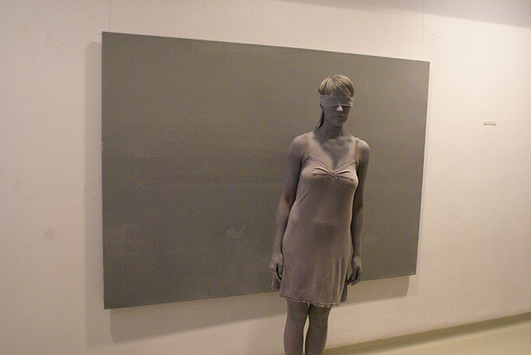
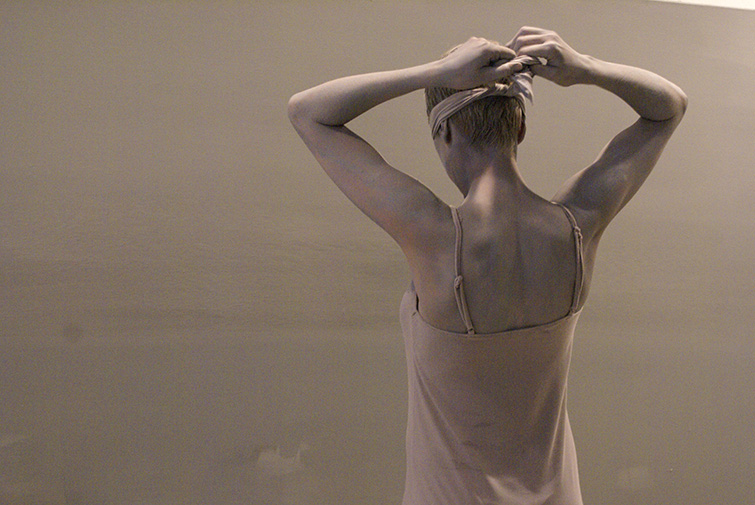
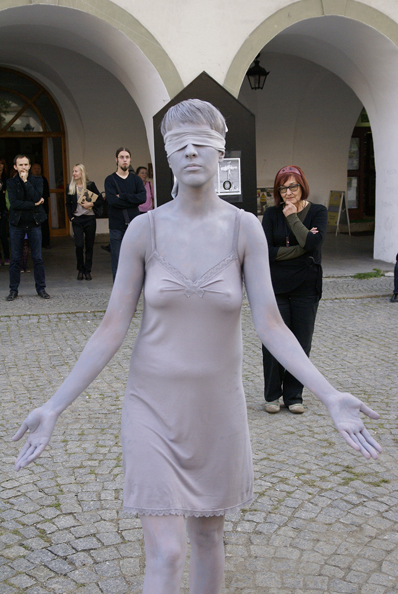
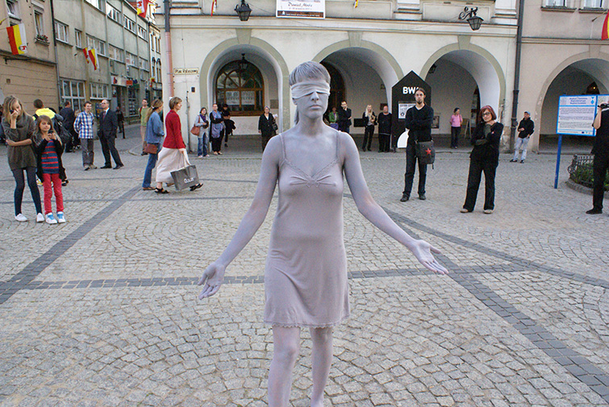
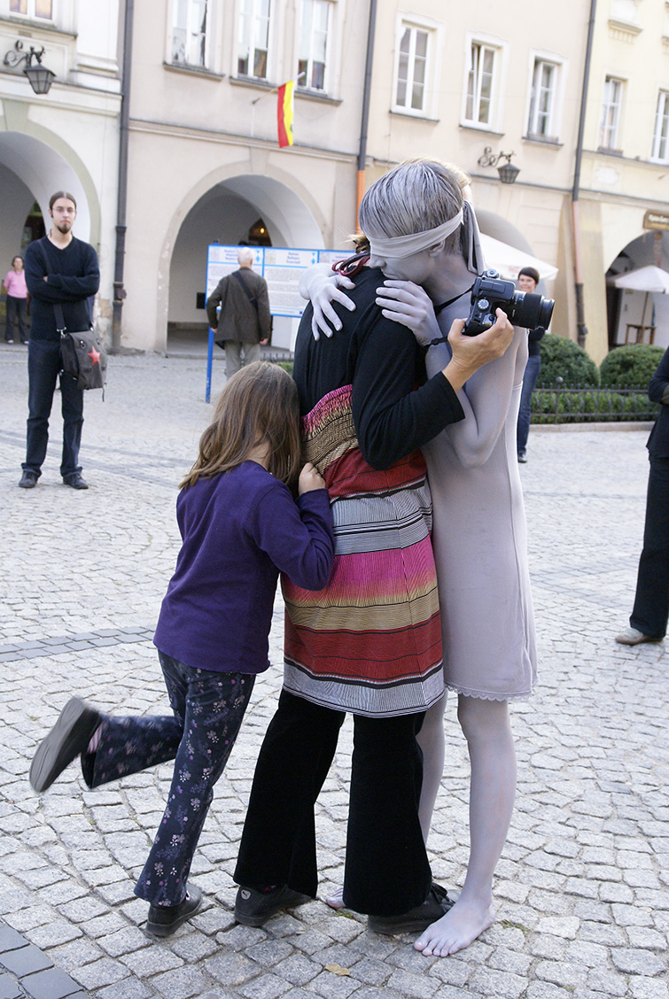
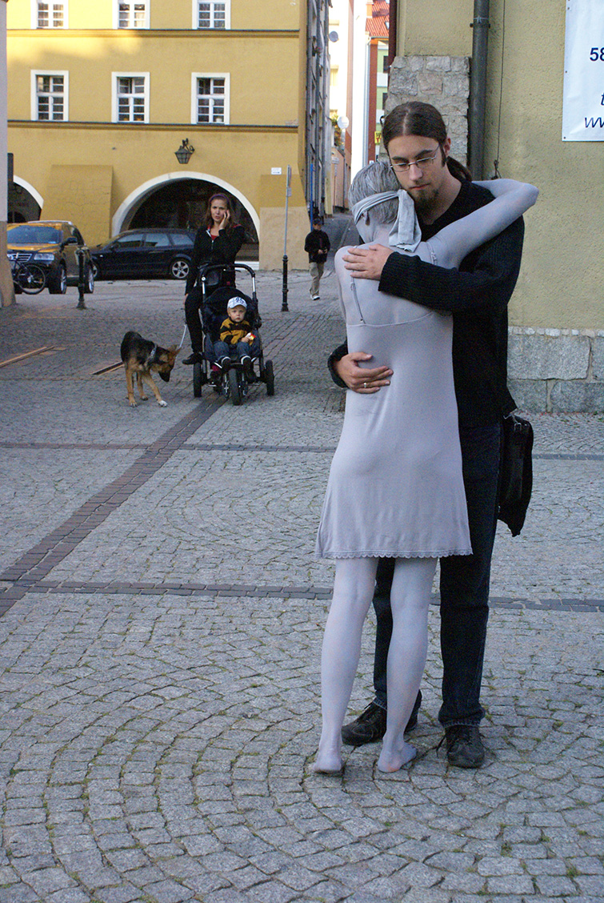
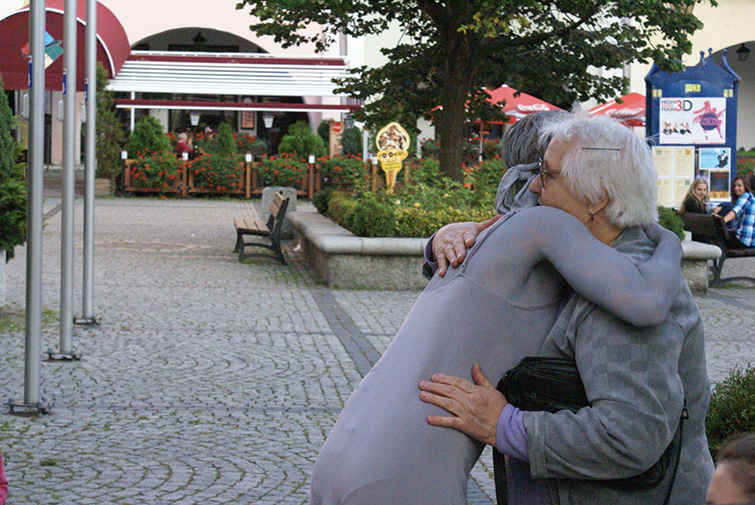
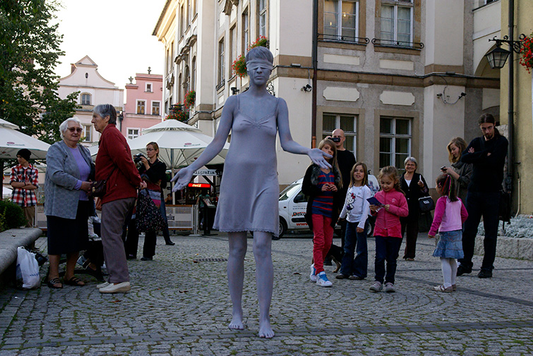
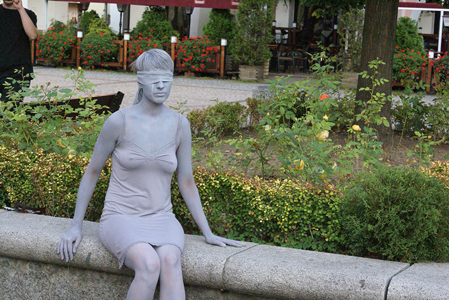
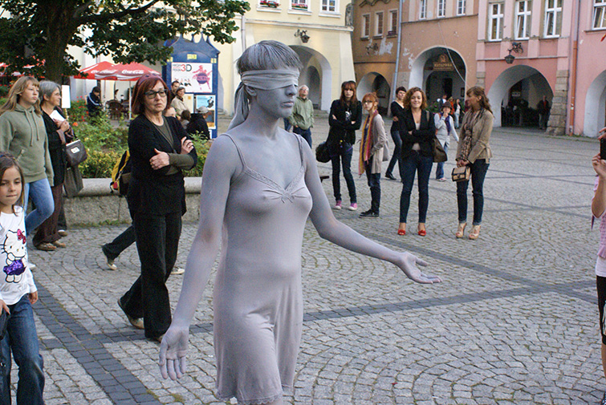
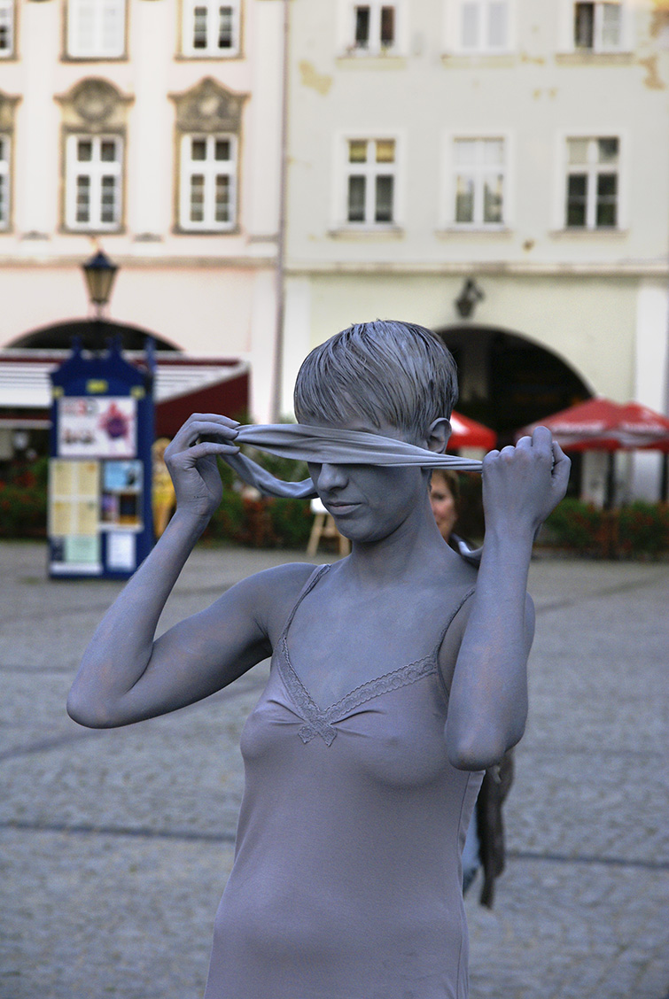
performance NIESKONCZONOSC odbyl sie 16 wrzesnia 2011 roku w BWA Jelenia Gora w ramach projektu "Miasto, nie miasto"
fot. Joanna Mielech, Krzysztof Kuczynski
kamera: Piotr Machlajewski
montaz: Izabela Chamczyk